深絞り加工の限界に挑戦
一枚の鋼板を、
どこまで深く。
吉野プレス工場は、埼玉県東松山市で金属プレス部品をつくっている会社です。大正12年の創業以来、一枚の鋼板をさまざまな形状へ加工する深絞りの量産化に取り組んできました。500t〜200tの大型タンデムプレス機を取り揃え、燃料タンク・自動車部品・医療機器など幅広い分野で、お客様に最適な工法をご提案します。
また近年主流になりつつある高張力鋼板（ハイテン材）のプレス加工にも対応しています。
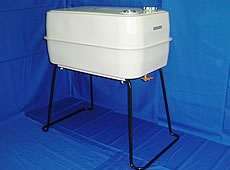
- 1923創業（大正12年）
- 500t最大プレス能力
- 1500mm最大ストローク
- 44名従業員数
深絞りとは
切って貼るのではなく、
一枚のまま深くする。
平らな鋼板を金型で押し込み、割れも皺もつくらずに深い器の形へ変えていく。これが深絞りです。溶接して継ぎ足す方法に比べ、継ぎ目がないぶん強く、漏れにくく、後工程も少なくて済みます。
そのかわり、材料が伸びる限界と型の中での流れ方を読み違えると、一発で破断します。当社が100年かけて積み上げてきたのは、この「どこまで伸ばせるか」の勘どころです。
-
01
材料を選ぶ
形状と深さから、必要な伸び特性を逆算して鋼板を決めます。高張力鋼板を使う場合はスプリングバックの量も織り込みます。
-
02
押さえながら絞る
しわ押さえの力とクッション圧を調整し、材料を「逃がしながら」流し込みます。強すぎれば破れ、弱すぎれば皺が出ます。
-
03
工程を重ねる
一度で出せない深さは、タンデムラインで複数回に分けて少しずつ深くします。500t機は最大1500mmのストロークを持ちます。
-
04
接合し、仕上げる
シーム溶接で密閉し、脱脂・焼付塗装まで自社で行います。燃料タンクのような漏れの許されない製品もここまで一貫です。
主要製品
同じ工法から、
これだけ違うものが出ます。
燃料タンクも、洗面ボウルも、医療機器のカバーも、根っこは同じ深絞りです。分野がばらばらに見えるのは、工法を軸に仕事を受けてきた結果です。
-
燃料タンク 95L
乾燥機用。シーム溶接で密閉し、焼付塗装まで一貫。
-
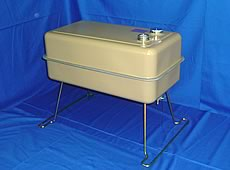
燃料タンク 40L
洗車機・暖房機など、容量違いで多数の型を保有。
-
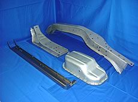
自動車部品（大型車向け）
長尺の骨格部品。ハイテン材の成形にも対応。
-
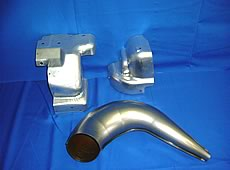
自動車部品
車体部品を複数の完成車系サプライヤー向けに供給。
-
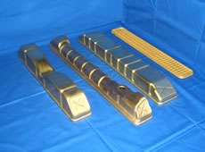
銅製ラジエーター部品
鋼板以外の材料も扱います。銅は流れ方が別物です。
-
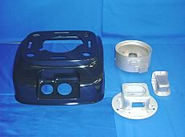
石油暖房機部品
外装から内部部品まで、複数点をまとめて受注。
-
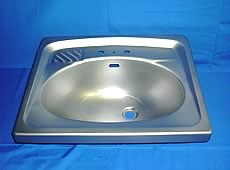
洗面ボウル
見える製品。深さと同時に表面のきれいさが問われます。
-
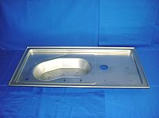
医療機器部品
寸法公差の厳しい分野。型の管理で精度を保ちます。
-
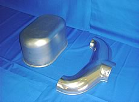
産業機器部品
単品形状の大きなカバー類も、絞りで一体成形します。
-
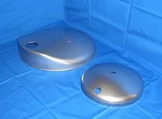
高圧容器部品
圧力のかかる用途。継ぎ目のない絞りが効きます。
プレス設備
10台のストレートサイドプレス。
能力の大きい順に並べています。バーの長さがそのまま加圧能力です。深さの要るものは油圧500t機、量の出るものはタンデムラインへ振り分けます。
- アイダ Q2-50500tダイハイト 1200mm／ボルスター 2800×1700mm
- 川崎油工 DP-500500t油圧・深絞り用／ボルスター 2500×1500mm
- 福井機械 OSE-500500tダイハイト 1000mm／ボルスター 2800×1500mm
- アイダ SMX-400400tダイハイト 800mm／ボルスター 2450×1400mm
- アイダ D-35350tダイハイト 850mm／ボルスター 2450×1350mm
- アイダ SMX-300×2300t2基／ダイハイト 800mm／ボルスター 2450×1400mm
- アイダ PL-300300tダイハイト 900mm／ボルスター 2500×1800mm
- アイダ SMX-200200tダイハイト 680mm／ボルスター 2000×1250mm
- 極東工業 KP-200200tダイハイト 550mm／ボルスター 1500×1200mm
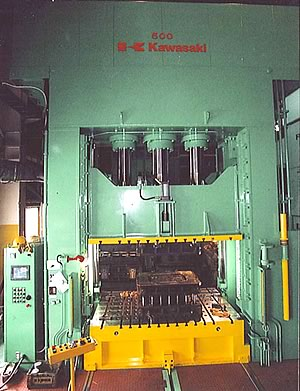
2008年3月 導入
川崎油工製 深絞り用
油圧500tプレス機
それまでの300t油圧プレス機に代わり導入しました。ボルスターサイズ2500×1500mm、最大ストローク1500mm、最大クッションストローク400mm。深絞りの「もう一段深く」に応えるための機械です。
- ボルスター
- 2500 × 1500 mm
- 最大ストローク
- 1500 mm
- 最大クッションストローク
- 400 mm
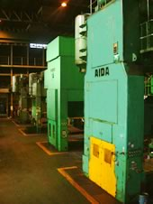
タンデム A ライン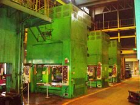
タンデム B ライン
溶接・塗装設備
絞ったあとも、
外に出しません。
プレスだけを請けて後工程を外に出すと、責任の切れ目ができます。当社は溶接・脱脂・焼付塗装までを自社に置き、漏れや塗膜の問題を工場の中で片づけます。
認証株式会社デンソーの抵抗溶接認証を取得（2009年11月）
| 分類 | メーカー | 能力 | 台数 |
|---|---|---|---|
| プロジェクション溶接機 | 東亜精機 | 100 kVA | 1 |
| スポット溶接機 | 松下 | 35 kVA | 6 |
| シーム溶接機 | 電元社 | 150 kVA | 1 |
| シーム溶接機 | 東亜精機 | 150 kVA | 1 |
| 脱脂装置 | 三智産業 | — | 1 |
| 焼付塗装ライン | 日本デビルビス | — | 1 |
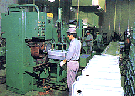
シーム溶接ライン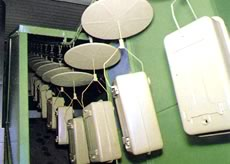
焼付塗装ライン
主なお取引先
15社と、続いています。
自動車車体部品からラジエーター、乾燥機の燃料タンク、防災機器まで。分野の広さは、工法で選ばれてきた証拠だと考えています。（順不同）
| 会社名 | 所在地 | 受注品目 |
|---|---|---|
| ユニプレス株式会社 | 神奈川県横浜市 | 自動車車体部品 |
| 株式会社浜岳製作所 | 神奈川県平塚市 | 自動車車体部品 |
| 株式会社ティラド秦野製作所 | 神奈川県秦野市 | ラジエーター部品 |
| 三共ラヂエーター株式会社 | 埼玉県入間市 | ラジエーター部品 |
| 株式会社栃木三池 | 栃木県足利市 | 自動車車体部品 |
| 高田工業株式会社 | 神奈川県横浜市 | 自動車車体部品 |
| ダイヤ工業株式会社 | 神奈川県横浜市 | 自動車車体部品 |
| 青木電器工業株式会社 | 埼玉県入間市 | 自動車車体部品 |
| 株式会社エスケイ | 栃木県佐野市 | 自動車骨格部品 |
| サンポット株式会社 | 岩手県花巻市 | 石油暖房機部品 |
| 株式会社山本製作所 | 山形県東根市 | 燃料タンク（乾燥機用） |
| 株式会社東北佐竹製作所 | 岩手県北上市 | 燃料タンク（乾燥機用） |
| 株式会社アルティア | 福島県いわき市 | 燃料タンク（洗車機用） |
| 株式会社ネオシス | 埼玉県鶴ヶ島市 | 業務用厨房機器部品 |
| ニッタン電子株式会社 | 東京都渋谷区 | 防災機器部品 |
よくあるご質問
はじめての方へ
どのくらいの深さまで絞れますか。
川崎油工製の深絞り用油圧500tプレス機は最大ストローク1500mm、最大クッションストローク400mmの能力を備えています。ただし絞れる深さは材質・板厚・形状で変わりますので、図面をお送りいただければ工法をご提案します。
高張力鋼板（ハイテン材）に対応できますか。
対応しています。近年主流になりつつある高張力鋼板のプレス加工にも取り組んでいます。スプリングバックを見込んだ型設計が必要になるため、早い段階でご相談いただけると精度を出しやすくなります。
溶接や塗装まで一貫して依頼できますか。
できます。プロジェクション溶接機・スポット溶接機・シーム溶接機に加え、脱脂装置と焼付塗装ラインを自社に備えています。2009年11月には株式会社デンソーの抵抗溶接認証を取得しました。
小さな部品でも相談できますか。
200tクラスのプレス機も稼働しており、大型部品から小物まで幅広く対応しています。まずはご相談ください。
試作や少量から相談できますか。
まずは図面と数量、ご希望の時期をお知らせください。量産を前提とした設備構成のため、数量によっては工法のご提案が変わる場合があります。可否を含めて率直にお答えします。
会社概要
株式会社吉野プレス工場
| 商号 | 株式会社吉野プレス工場 |
|---|---|
| 代表者 | 代表取締役会長 吉野 昌治 代表取締役社長 吉野 智雄 |
| 創業 | 大正12年12月（1923年） |
| 資本金 | 1,000万円 |
| 所在地 | 〒355-0071 埼玉県東松山市大字新郷322-1 （東松山工業団地内 敷地面積 12,000m²／建物面積 4,230m²） |
| 電話・FAX | Tel. 0493-22-4331 ／ Fax. 0493-22-4334 |
| 業務内容 | 各種金属プレス部品の製造・販売（薄板絞り・深絞り加工を得意とします） |
| 従業員数 | 44名（2015年1月現在） |
| 取引金融機関 | 武蔵野銀行／埼玉懸信用金庫／日本政策金融公庫 |
| 担当者 | 社長 吉野 智雄 |
図面を一枚、送ってください。
絞れるかどうか、何工程になりそうか、どの機械に載せるか。図面があれば具体的にお答えできます。難しい場合も、その理由をはっきりお伝えします。